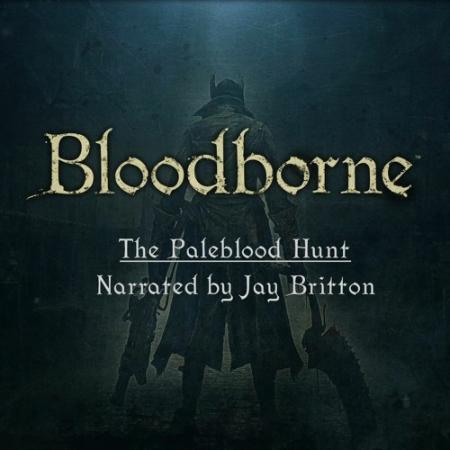
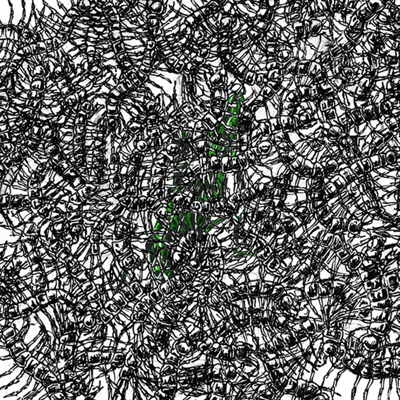
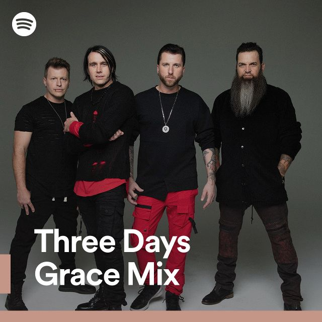
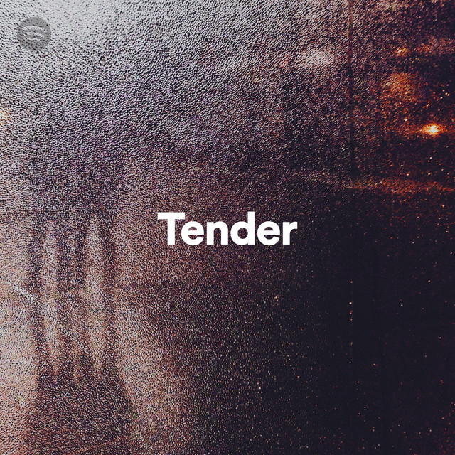
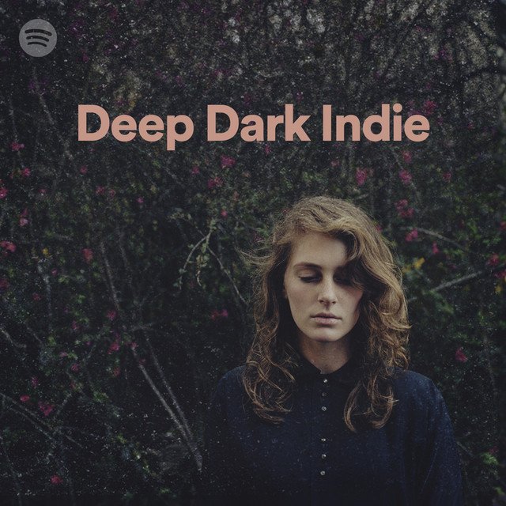

Для тебя
В дорогу

Chapter10 - The Paleblood Hunt
Недавно прослушано
Дора

pyrokinesis
Maroon 5
Cocoon
Твои лучшие миксы
Куок: микс
Post Malone: микс
Billie Eilish: микс

Микс музыки 2000-х
Всё сложно
Плейлисты, которые поддержат в трудный момент.

Broken Heart

Tender

Sad Covers

Deep Dark Indie

Dark & Stormy